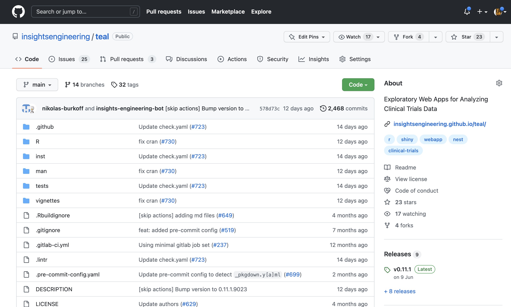

Using open-source
What is the open-source health of the package?
The communities that maintain and build open-source packages are diverse, and there are no set conventions on how they are maintained, resourced, and governed. Looking at metrics individually could be misleading – e.g., if a project has had no activity for 12 months, is that because the product has been abandoned/superseded, or could it be it had a small well-defined scope and is now stable and feature complete? The following section is a non-exhaustive discussion of topics relevant when using open-source data science projects.
How can I see the activity of an open-source project?
Many, but not all, open-source projects are on github.com or gitlab.com. On github.com, every repo contains a tab called Insights, from where you can see information on the people that contributed lines of code to a project. Of a particular interest might be the Contributor tab within Insights, an example screenshot of the dplyr R package contributor page is below.

Some sites like openpharma.pharmaverse.org (specific to R and python packages in pharma) and OSS Insights (https://ossinsight.io/; powerful tool for any project on GitHub) also provide more specific insights into the community engagement behind each project hosted on github.com.
How active are the community behind a project?
Projects can go through lifecycles, so activity on a repo could have a variety of positive or negative implications. A project could have almost no active community in terms of recent contributions or response to issues, much like the R package survival, yet be a stable and critical package in R installations. Alternatively, a lack of activity could indicate a package is abandoned or deprecated.
The community behind a project is also not limited to the people that contribute code. Users can also engage with a project via giving feedback via mechanisms like GitHub issues, emailing authors or engaging in discussions on GitHub issues. The following figure is an example of an issue page for the teal R package. The figure shows that teal has 24 open issues, and 266 closed issues. Small speech bubbles on the right of the figure show discussion have occurred on some issues. By looking through the issues, subjective impressions on community health can be made, for instance whether it’s a few people giving feedback and one person developing, does it have stale issues no-one replies to, or does it have a lively community engaged in discussion and coordination.

Packages can also be open sourced without having the place they develop the code exposed to the general public. An example is the randomForest package, which is an open sourced (GPL-2/3) R package where the source code of the releases is open sourced for use, but the package authors do not give users access to view the place where they develop code. This does not mean the quality of the code is inferior, but does indicate there is an additional barrier to engaging with the package development as the first step would be to contact the authors.
Some things to consider when trying to establish the activity of a community are:
- How many individuals contributed to the project?
- What is the spread in contributions? What is the size of the ‘core’ group that contribute the majority of the code? What is the spread of commits – is it highly skewed to 1 or 2 people contributing?
- What is the recent and trends in commit activity? Is it currently active, formerly or is yet to become active?
- How many open and closed issues are there? If it’s a low number, is that in line with the age and expected use of the project?
- Are there ‘stale’ open issues, where issues remain open for months or years? Are many of these stale issues with comments, suggesting some discussion, or absent of comments suggesting there is no feedback loop present between issues and the codebase? A thing to also look for is whether closed issues are resolved, as some projects use bots to automatically close stale issues.
How do I find open-source projects?
Numerous methods exist to find projects. Specific to R projects, the following sources exist:
pharmaverse.org: opinionated/curated effort to provide end to end tools for clinical reporting.openpharma.pharmaverse.org: un-opinionated tracker of packages built by pharma for pharma use cases. It also and indexes and provides package metadata in a dashboard, and provides metadata to pharmaverse.org.rseek.org: Google filter for R relevant content.rinpharma.com/publication: The proceedings of the R/Pharma conference contain many relevant projects.
What do I do if I see a project I could use, but it needs modification for my use case?
Using R packages as an example, if your analysis plan requires creating a Kaplan Meier plot, you could implement this using open code you program using R base plotting functions. Alternatively, you could introduce a dependency on a package that provides that functionality as a parameterised function, like survminer, visR or tern. Occasionally an existing package may be missing a feature you want, as can be derived from the presence of at least 3 R packages with a Kaplan Meier plotting function. In such cases, you may need to extend, or start a new package.
In the case of wanting to change default behaviour of package beyond what is possible in the current function, the user has several options – ranging from extending the package function to meet your needs, through to initiating a new package. It can be difficult to decide whether to extend an existing package, or whether it may be worth starting a new one, some resources to help understand how to contribute to a new package:
- A blog post by Jim Hester on contributing to the tidyverse: https://www.tidyverse.org/blog/2017/08/contributing/
- Many packages have a CONTRIBUTING.md file, or mention in the README.md, how you can contribute. They may also be a dedicated tag for issues discussing new features (e.g. ‘enhancements’).
What can help me understand the risks around using an open-source project?
Risk can come from several domains including;
- Security, e.g. it has malicious code,
- Quality, the package has poor documentation and code is unreliable.
- Accuracy, the package does not correctly reference what it does, or implements it incorrectly.
The R validation hub (pharmar.org) is a pan-pharma organisation, that aims to coordinate between pharma companies how the validation (and by extension risk) in R packages is undertaken and documented. Of particular relevance is the Case Studies repository, which contains examples from Roche, Merck and Novartis (as of July 2022) on how they approach validation and risk mitigation (https://github.com/pharmaR/case_studies). The R Validation Hub is also continuing work on the Risk Assessment App (https://github.com/pharmaR/risk_assessment), which aims to provide an application that will surface metrics to a user to help evaluate an R package.
Roche has also open sourced a github-action called thevalidatoR, which is available on Github Marketplace (https://github.com/marketplace/actions/r-package-validation-report), which will generate a PDF with the unit testing results, as well as a traceability of matrix of documentation to tested functionality against a standard rocker R container.
Licenses: using a project
The licence of projects you depend on, particularly if you incorporate the source code into your compiled/shared product, can have drastic effects on what you can do with your project. It is always important to seek in-house counsel advice on your companies position on different license types.
As a general guidance:
- There are permissive licenses that allow people to use a project in almost any way, through to copy-left licenses that prevent distributing and, in some cases, monetizing any project that incorporates the dependency into it’s codebase.
- Two key resources to understand license types are https://choosealicense.com/ and https://opensource.org/licenses.